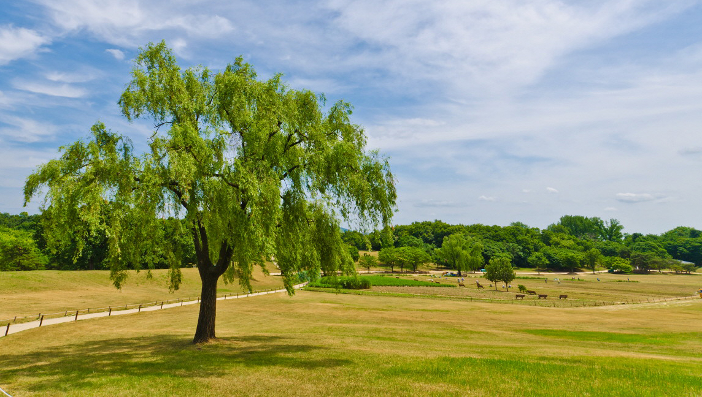

HOME>생태즐기기>잔디시설안내
잔디시설안내

-
- 시민들과 함께 하는 올림픽공원 잔디시설
- 올림픽공원 잔디의 훼손을 예방하고 방문객들에게 보다 고품질의 잔디공간을 제공하기 위하여 잔디광장의 지역별 순환개방을 실시하고 있습니다.
- 올림픽공원은 피크닉장, 가족놀이동산, 나홀로나무, 88마당, 지구촌공원, 소마시술관 등을 개방함으로써 도심속의 자연을 만끽하실 수 있습니다.
-
- 잔디시설 개방기간
- 피크닉장, 가족놀이동산, 나홀로나무 : 연중 상시개방
- 88마당, 지구촌공원, 소마미술관 전시마당 : 6. 1 〜 10. 31
- 어린이날(5월 5일) 임시 개방
-
- 잔디통제시기
- 신초발아 시기 및 잔디 휴면기(11. 1 ~ 익년 5. 31)
- 우천시 및 비온 후 3일 이내
- 훼손지역 잔디복구를 위한 회복시기
- 기타 특별한 상황발생시 잔디마당의 출입을 통제합니다.
잔디마당 출입시 주의사항
-
- 토성사면 미끄럼타기 및 개방지역내에서는 운동(공놀이, 자전거 타기, 롤러타기, 줄다리기 등)을 삼가해 주세요.
취사 및 음주, 사행성(도박)행위를 하지 맙시다.
잔디를 훼손하는 행위를 하지 맙시다.
그늘막, 텐트 설치 행위/ 인라인스케이트, 자전거 타는 행위/ 골프, 축구, 야구, 족구 등 운동
잔디밭에 애완동물은 출입할 수 없습니다. (배설물로 인한 선충류 감염 방지)
쓰레기는 반드시 되가져 갑시다.
출입금지 기간: 11.1~익년5.31
- 토성사면 미끄럼타기 및 개방지역내에서는 운동(공놀이, 자전거 타기, 롤러타기, 줄다리기 등)을 삼가해 주세요.